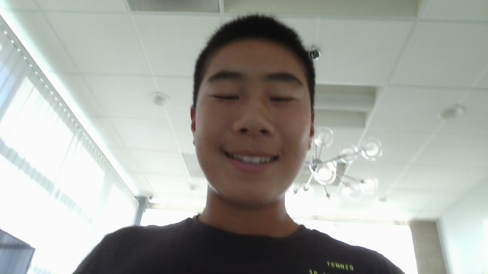

Charles Wang is a student interested in tennis, competition, and building a personal body of work that can grow over time.
Although he does not have finished projects yet, this website is designed as the starting point: a professional portfolio that can later hold school projects, tennis analytics, match notes, highlight videos, essays, and any work that shows curiosity, discipline, and improvement.
Tennis is the central story. Wang is focused on improving his rankings so he can compete at Easter Bowl, then continue building toward Orange Bowl. Those goals are part of a larger foundation for his future tennis career.
The goal is to improve as a junior tennis player while building the habits, results, and portfolio that can support a future in the sport.
Recruiters from major companies should see this site as an early snapshot of ambition: a student athlete learning how to present his work, define goals clearly, and keep improving in public.